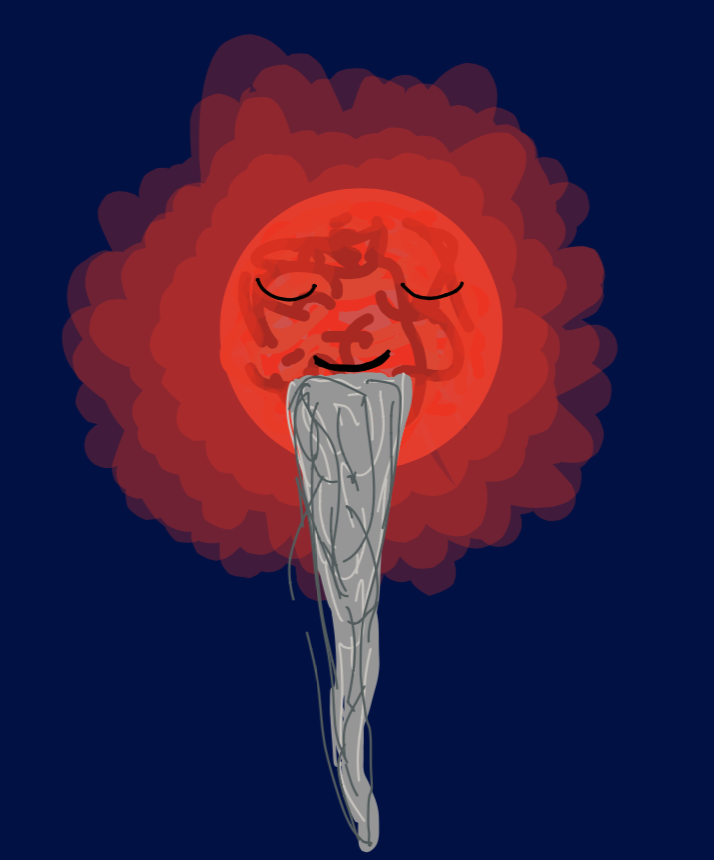
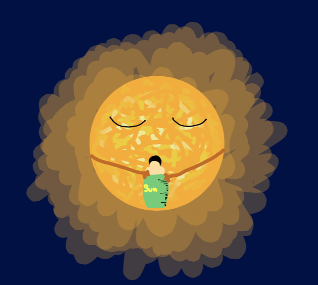
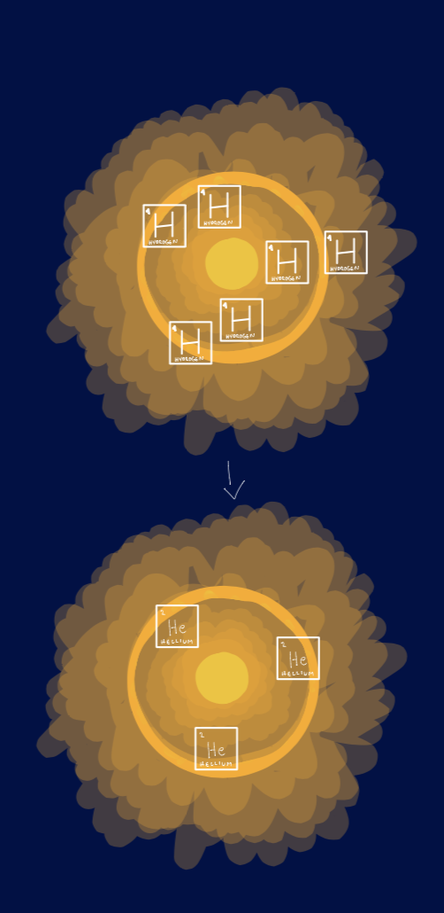
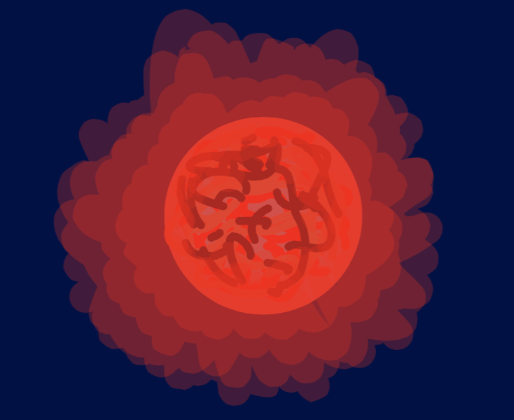

The Sun is a star closer to the low mass part of the scale, but still really big compared to some low mass stars. The lower the mass the slower it takes for it to use up the recources (hydrogen,...) so they shine much longer - about a TRILLION YEARS!
The Sun only shines for 12 billion years and currently oit is 5 billion years old.

How will the sun end it's life?
  